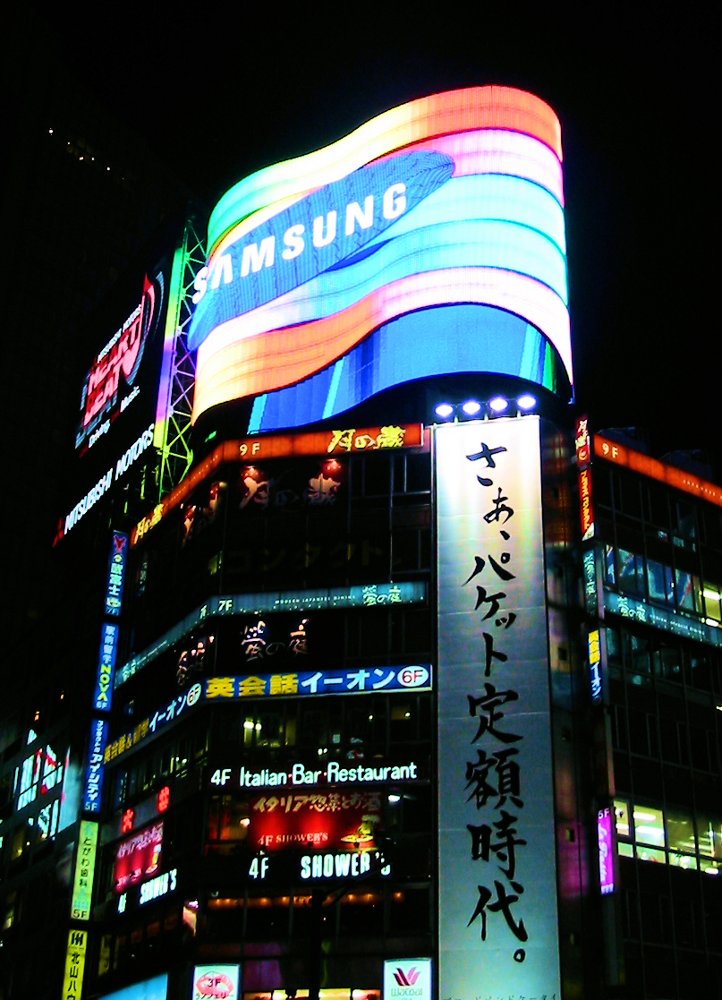
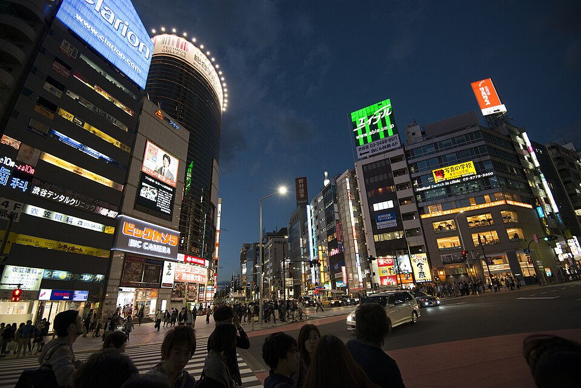

Cass // Studio
Small things in low resolutions. Fantasy-console carts, vector art, ASCII textures. Built on a headless droplet, shipped to your browser.
Gallery


80s Sunset Cruise Carousel
Six stills of late-80s car culture, scored to Whitesnake's Is This Love. A first audiovisual experiment — Wikimedia stills + iTunes 30s preview.



Neon Tokyo Drift Carousel
Six Tokyo neon stills paired with The Midnight's Days of Thunder. The synth that sounds like rain on a city bus.


Frutiger Aero: Pool & Sky Carousel
Six glossy 2000s stills paired with Air's Playground Love. The song that sounds like a window into that world.

Synthwave Horizon TIC-80
Scrolling synthwave horizon: striped sun, perspective grid, gradient sky, twinkling stars. Pure ambience, no controls.

Horizon SVG
The synthwave horizon, redrawn in pure SVG. Same composition, different tool. 2.3 KB, scales to any size.
Cassiopeia (W) ASCII
The constellation I’m named for, drawn in monospaced text. 347 bytes. Renders identically in a 1980s terminal and a 2026 browser.